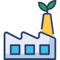
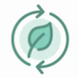

Árvore de saberes A EITA nasce dos anseios da gestão municipal em desenvolver um equipamento que possa ajudar a fortalecer o resgate educacional, histórico e ambiental de Maranguape. Dessa forma, propõe-se na consolidação de mais um espaço para a educação pública municipal. Busca também incentivar, sobretudo, uma perspectiva pedagógica contextualizada, bem como a gestão do meio ambiente, a pesquisa científica e o fomento de projetos tecnológicos ambientais e sociais. Analogamente, a EITA pode ser interpretada como uma grande árvore de saberes, onde seus múltiplos galhos possuem relação com as diversas áreas de conhecimentos contemplados em sua circunscrição. Já os frutos dessa árvore, tem relação com os projetos engendrados em tais galhos. Isso aproxima melhor a EITA da ideia que nós temos para um ente vivo, tornando suas raízes mais fortes e sua sombra cada vez mais acolhedora. Diretrizes da EITA A EITA constituída como Organização Social; Seja um “Projeto Guarda Chuva” – contemplando diversos sub-projetos: educacionais, socioambientais, incubadoras de projetos, parque para visitação e convênios com instituições diversas para o desenvolvimento de pesquisas; Estimular a incubação de iniciativas diversas e convênios com outras instituições públicas e privadas. Dimensões Educação Educação contextualizada com foco em meio ambiente, inclusão e diversidade. Pesquisa Núcleo de pesquisa, produção e desenvolvimento. Empreendedorismo Incubadora de projetos sócio-ambientais; Inovação; Negócios verdes; Extensão Núcleo de visitação; Resgate histórico Educação ambiental; Tecnologias Ambientais  Também chamada de tecnologia sustentável é resultado da aplicação de diversas ciências ambientais para o amparo do espaço natural e biodiversidade. Nos últimos em anos, a tecnologia ambiental ganhou uma nova força, no sentido de corresponder necessidades de desenvolvimento sustentável. Suas aplicações se entrelaçam com vários ramos das ciências ambientais, desde o controle de poluição até o desenvolvimento de processos limpos. Tipos: Mensuração ambiental: Ferramentas, instrumentos, equipamentos ou mesmo sistemas de medida, controle e gestão de informações ambientais. Visa oferecer dados suficientes para as tomadas de decisão sobre a qualidade de Meio Ambiente. Tecnologia de controle de poluição: Processos, técnicas e práticas desenvolvidas para mitigar impactos gerados durante práticas produtivas. Não existe aqui, obrigatoriedade de imposição de mudanças no processo produtivo original. É o controle do processo, não a mudança completa de paradigma. Tecnologias limpas: Eliminação ou diminuição dos aspectos prejudiciais dos processos produtivos sobre o Meio Ambiente. Requer uma perpsctiva holística. Tecnologia de impacto nulo: Isenta da geração de impacto durante o desenvolvimento, implantação e utilização. Temos como máximo representante deste segmento, aplicações em Biotecnologia. Mas devemos tratar isso como caráter promissor. Na prática, ter um ciclo produtivo completo sem impactos ambientais é bastante improvável e utópico. Exemplos: Arquiterura sustentável; Eficiência energética; Energias renováveis; Mineração com tecnologias verdes; Hidrogênio verde. Tecnologias Sociais Todo produto, método, processo ou técnica com objetivo de produzir soluções para problemas sociais e que estejam em consonância com aspectos de simplicidade, aplicabilidade e reprodutibilidade, baixos custos e legítimo impacto social, será tratado como tecnologia social. Tecnologia social é algo instrinsecamente inclusivo. isto porque as pessoas afetadas pelo problema tem que participar da gestação e implementação das soluções. Essa apropriação dos processos dá sustentação às soluções e amplia o empoderamento das comunidades sobre os aspectos sócio-ambientais que lhes competem. As tecnologias ambientais devem ainda promover cidadania, educação multidimensional, acessibilidade, inclusão, sustentabilidade, resgate e manutenção das culturas tradicionais, além do incentivo à participação popular. Sendo um conjunto de iniciativas que promovem transformações sociais de base, as pessoas tem que ser parte da solução dos seus próprios problemas. Por se tratar, muitas vezes, de processos de inovação, as tecnologias sociais precisam de ações nos âmbitos coletivos, com ênfase em fluxos participativos dos cidadãos. Todos os atores interessados no novo cenário devem se integrar e se engajar da melhor forma possível, observando-se as potencialidades de cada grupo. Tecnologias sociais e inovações sociais podem ser tratadas como estados de ressonância. Exemplos: Água potável; Alimentação; Educação; Energia; Habitação; Renda; Saúde; Meio Ambiente; Tecnologia Apropriada Surgida em meados do século XIX durante a descolonização da Índia. Foi a intensificação da popularização da fiação manual. Produzir o próprio tecido seria uma das sementes para a difusão do pensamento popular para a independência econômica e política da Índia. A natural consequência deste movimento seria o surgimento da oposição à cultura e produção comercial do ocidente. E neste processo, ao ressignificar a fiação e fortalecer a tradição, Gandhi (1869 - 1948) despertou a consciência política de milhares de hindus. Isso possibilitou o desenvolvimento do sentimento de independência política. A roca de Gandhi se torna então objeto da Tecnologia apropriada. Espaços Ideia ESPAÇO 1 - Escola Municipal de Ensino Fundamental (anos finais), de Educação Integral (mínimo 7 horas diárias), com currículo que trabalhe a Base Nacional Curricular Comum - BNCC. Apoiada na educação contextualizada e atividades extracurriculares, com oferta de cursos e oficinas para a comunidade escolar. ESPAÇO 2 - Núcleo de Pesquisa, Produção e Desenvolvimento, que possa abraçar como principais desafios: capacitação e domínio de toda a legislação ambiental que oriente e determine práticas e intervenções possíveis nos ecossistemas da região, conservação das fontes naturais, qualidade da água, controla na geração de resíduos sólidos, nível de sustentabilidade das atividades econômicas das Serra de Maranguape, Aratanha e Lagedo, ecoturismo e produção de mudas de espécies nativas. Este Espaço abrange: Centro Municipal de Formação em Educação Ambiental; Célula do Núcleo Fitoterápico do estado do Ceará; Célula do centro de implementação do Projeto Gestão Inteligente de Cidades Célula de pesquisa (preferência para o desenvolvimento de pesquisas voltadas para as Serras do munic[ipio de Maranguape). Sede da APA da Serra de Maranguape. Sede da APA da Serra da Aratanha.  ESPAÇO 3 - Núcleo de Visitação, Resgate Histórico e Educação Ambiental: com o intuito de fortalecer o ecoturismo e a patrimonialidade existente em Maranguape. Nesse aspecto, pretende-se fortalecer o turismo local a partir da preservação da natureza, oferecendo um espaço para encontro das famílias, turismo ecológico, museu, auditório, centro de convivência etc. ESPAÇO 4 - Coworking verde, pensado e vocacionado para odesenvolvimento de “negócios verdes" ou voltados para iniciativas que promovam a sustentabilidade. Nesse aspecto, precisa-se dotar o espaço de uma gestão direcionada para a avaliação de oportunidades e viabilidades de propostas e projetos.